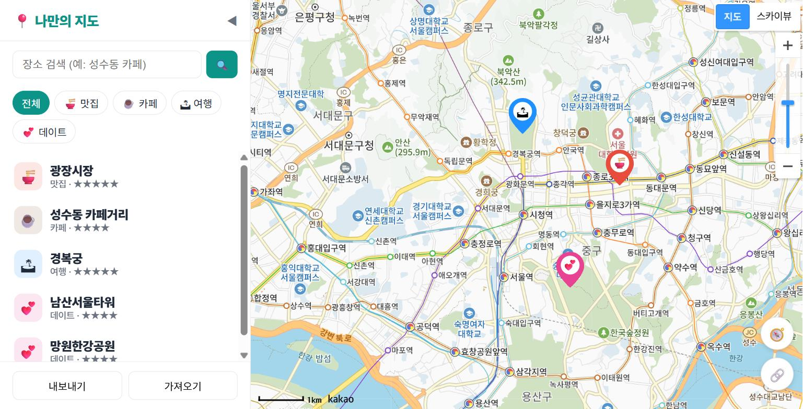
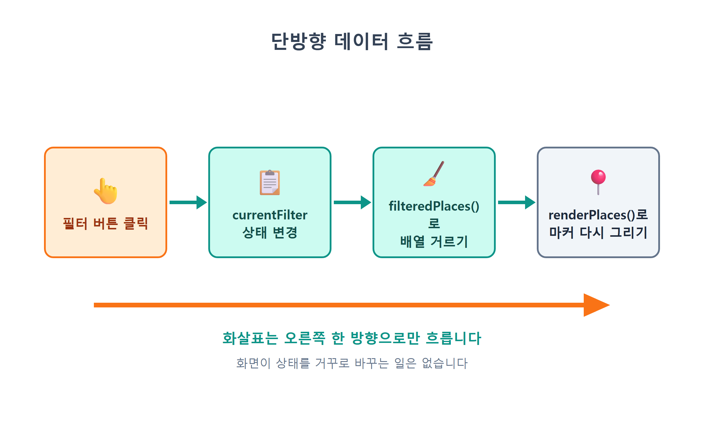
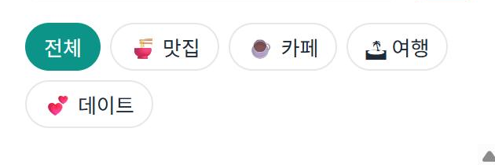
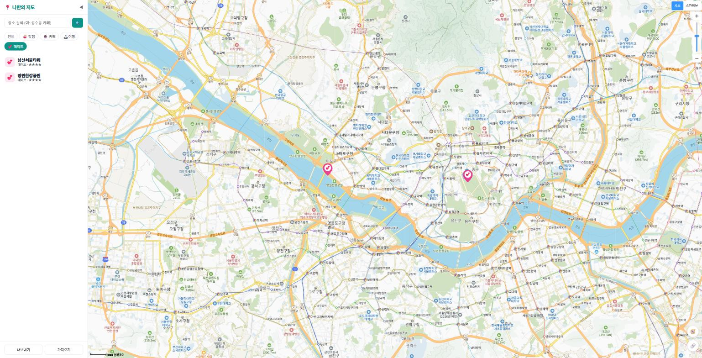
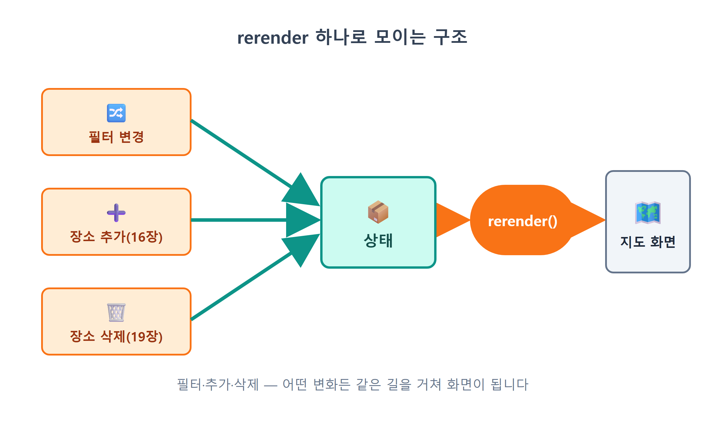

14장 카테고리 필터¶
이 장에서 배우는 것
- "상태(state)"가 무엇인지, 왜 화면보다 상태가 먼저인지 이해합니다
- 필터 상태를 담는 변수
currentFilter와 배열의filter()메서드를 배웁니다 - 🍜맛집/☕카페/🏝여행/💕데이트 필터 버튼을 만들고
active클래스를 토글합니다 - "상태 → 화면" 한 방향으로만 흐르는 단방향 렌더링 구조를 익힙니다
- "전체" 버튼처럼 예외 케이스를 상태 설계에 녹이는 법을 배웁니다
13장까지 따라온 여러분의 지도에는 이제 다섯 개의 장소가 찍혀 있습니다. 빨간 맛집 핀, 갈색 카페 핀, 파란 여행 핀, 분홍 데이트 핀이 저마다의 색과 이모지를 뽐내고, 핀을 누르면 예쁜 말풍선까지 뜹니다. 여기까지만 해도 충분히 자랑할 만한 지도입니다.
그런데 장소가 다섯 개가 아니라 쉰 개라면 어떨까요? 주말 데이트 코스를 짜려고 지도를 열었는데, 화면에는 맛집·카페·여행지 핀이 뒤섞여 빼곡합니다. 정작 보고 싶은 💕 핀은 그 사이에 파묻혀 있죠. 카카오맵이나 배달 앱을 떠올려 보세요. 상단에 "음식점", "카페", "편의점" 같은 버튼이 줄지어 있고, 하나를 누르면 그 종류만 남습니다. 오늘 우리가 만들 것이 바로 그 카테고리 필터입니다.
기능만 보면 작은 장입니다. 버튼 다섯 개와 함수 두어 개가 전부니까요. 하지만 이 장에는 이 책 후반부 전체를 지탱하는 커다란 개념이 하나 숨어 있습니다. 바로 상태(state)1와 단방향 데이터 흐름입니다. 15장의 검색도, 16장의 장소 추가도, 18장의 목록 연동도 전부 오늘 만드는 구조 위에서 돌아갑니다. 작은 기능으로 큰 뼈대를 세우는 장이니, 코드보다 흐름에 집중해 주세요.
14.1 필터의 정체 — 버튼이 아니라 "상태"¶
필터 기능을 처음 상상하면 이런 그림이 떠오릅니다. "카페 버튼을 누르면 → 카페가 아닌 마커를 숨긴다." 버튼과 마커를 직접 연결하는 그림이죠. 직관적이지만, 이렇게 만들면 금방 꼬입니다. 카페 버튼을 눌렀다가 여행 버튼을 누르면? 숨겼던 마커 중 어떤 걸 다시 보여줘야 하죠? 나중에 검색으로 장소가 추가되면 그 마커는 지금 필터에 맞춰 숨겨야 하나요, 보여줘야 하나요? 경우의 수가 폭발합니다.
그래서 프로그래머들은 질문을 바꿉니다. "버튼을 누르면 무엇을 할까?"가 아니라, "지금 무엇이 선택되어 있는가?"를 먼저 묻습니다. 그리고 그 답을 변수 하나에 적어 둡니다.
이 변수가 바로 필터 상태입니다. 'all'이면 전체 보기, 'cafe'면 카페만 보기. 지도에 마커가 몇 개 떠 있든, 진실은 언제나 이 변수 하나에 있습니다. 화면은 이 변수를 보고 그려지는 결과물일 뿐입니다.
이 관점의 전환이 왜 강력한지 비유로 설명해 보겠습니다. 식당의 주문서를 떠올려 보세요. 주방장이 손님 얼굴을 일일이 기억해서 요리를 바꾸는 식당은 손님이 늘면 반드시 실수합니다. 잘 되는 식당은 주문서 한 장을 진실로 삼습니다. 주문서가 바뀌면 주방은 주문서대로 다시 만들 뿐이죠. currentFilter가 주문서이고, 지도 화면이 요리입니다. 버튼은 주문서를 고쳐 쓰는 펜일 뿐, 요리에 직접 손대지 않습니다.

그림으로 정리하면 흐름은 딱 세 단계입니다.
- 버튼 클릭 → 상태를 바꾼다 (
currentFilter = 'cafe') - 상태 기준으로 → 데이터를 거른다 (
filteredPlaces()) - 걸러진 데이터로 → 화면을 다시 그린다 (
renderPlaces(...))

화살표가 오른쪽으로만 흐른다는 점을 눈여겨보세요. 화면이 상태를 거꾸로 바꾸는 일은 없습니다. 이것을 단방향 데이터 흐름이라고 부르고, React나 Vue 같은 유명 프레임워크들도 전부 이 원리 위에 서 있습니다. 우리는 프레임워크 없이 바닐라 자바스크립트로 같은 원리를 직접 구현해 봅니다. 원리를 손으로 만들어 본 사람은 나중에 어떤 프레임워크를 만나도 낯설지 않습니다.
14.2 필터 바 UI 만들기¶
개념을 잡았으니 Claude Code에게 일을 시킬 차례입니다. 늘 그랬듯 코드를 직접 치지 않습니다. 무엇을 원하는지 정확히 말하는 것이 우리의 일입니다.
🗣 이렇게 시키세요
사이드바 상단, 제목 바로 아래에 카테고리 필터 바를 만들어줘. "전체 / 🍜 맛집 / ☕ 카페 / 🏝 여행 / 💕 데이트" 버튼 5개를 알약 모양으로 가로 배치하고, 각 버튼에 data-category 속성으로 카테고리 id(all, food, cafe, travel, date)를 달아줘. 선택된 버튼은 active 클래스로 배경색이 채워지게 하고, 처음에는 "전체"가 선택된 상태로 시작해줘. 카테고리 id는 12장에서 만든 categories.js와 똑같이 맞춰줘.
프롬프트에서 눈여겨볼 부분은 두 가지입니다. 첫째, 버튼에 표시할 한글 라벨과 코드에서 쓸 카테고리 id를 구분해서 지정했습니다. 둘째, "categories.js와 똑같이 맞춰줘"라고 기존 코드와의 연결 고리를 명시했습니다. AI는 우리 프로젝트를 전부 기억하지 못할 때가 있으므로, 기준이 되는 파일을 짚어 주면 어긋남이 확 줄어듭니다.
Claude Code가 index.html의 사이드바에 추가한 필터 바입니다.
<nav id="filter-bar">
<button class="filter-btn active" data-category="all">전체</button>
<button class="filter-btn" data-category="food">🍜 맛집</button>
<button class="filter-btn" data-category="cafe">☕ 카페</button>
<button class="filter-btn" data-category="travel">🏝 여행</button>
<button class="filter-btn" data-category="date">💕 데이트</button>
</nav>
짧지만 배울 것이 알찬 HTML입니다. 하나씩 읽어 봅시다.
data-category="food"— HTML 표준이 제공하는 데이터 속성입니다.data-로 시작하는 속성은 브라우저가 아무 의미를 부여하지 않고, 우리가 자바스크립트에서btn.dataset.category로 꺼내 쓸 수 있는 메모장입니다. 버튼의 겉모습(🍜 맛집)과 코드용 이름(food)을 분리하는 표준적인 방법이죠. 나중에 라벨을 "맛집"에서 "먹거리"로 바꿔도 코드는 한 줄도 고칠 필요가 없습니다.- 첫 버튼에만
active— "처음엔 전체 보기"라는 초기 상태를 HTML에도 반영했습니다. 잠시 뒤 자바스크립트의currentFilter = 'all'초기값과 짝이 맞는다는 것을 확인하게 됩니다. <nav>— 버튼 묶음이 "탐색 도구"라는 의미를 담는 시맨틱 태그입니다.<div>로 해도 동작은 같지만, 의미가 있는 태그를 골라 쓰는 습관은 AI가 먼저 보여주는 좋은 본보기입니다.
스타일은 style.css에 이렇게 추가됐습니다.
#filter-bar { display: flex; flex-wrap: wrap; gap: 6px; padding: 10px 16px; }
.filter-btn {
border: 1px solid var(--line); background: none; border-radius: 999px;
padding: 5px 11px; font-size: 13px; cursor: pointer; color: var(--text);
}
.filter-btn.active { background: var(--brand); border-color: var(--brand); color: #fff; }
border-radius: 999px는 버튼을 알약(pill) 모양으로 만드는 CSS 관용구입니다. 높이의 절반보다 큰 값이면 무조건 완전한 반원 모서리가 되니, 넉넉하게 999를 주는 거죠. 그리고 마지막 줄이 오늘의 주인공 중 하나입니다. .filter-btn.active — "filter-btn이면서 동시에 active 클래스를 가진 요소"라는 뜻으로, 선택된 버튼만 배경이 채워집니다. 클래스 하나를 붙였다 뗐다 하는 것만으로 "선택됨"을 표현하는, 웹에서 가장 흔한 패턴입니다.
저장하고 브라우저를 확인해 보세요. 사이드바 제목 아래로 알약 버튼 다섯 개가 가지런히 놓여 있으면 성공입니다. 물론 아직 눌러도 아무 일도 일어나지 않습니다. 상태와 연결하지 않았으니까요. 미리 한마디 얹어 두면, 15장에서 검색창이 제목과 이 필터 바 사이에 끼어들어 와서 사이드바의 최종 레이아웃은 위에서부터 검색창 → 필터 → 목록(18장) 순이 됩니다.

💡 팁
data-category의 값(food, cafe, travel, date)은 12장 categories.js의 키, 그리고 장소 데이터의 category 값과 철자까지 완전히 같아야 합니다. 한 글자라도 다르면(예: cafe vs caffe) 필터가 조용히 빈 결과만 내놓습니다. 에러도 안 나서 찾기 어려운 버그죠. 이런 "같은 이름을 여러 곳에서 쓰는" 값은 categories.js처럼 한 파일에 모아 두고 나머지가 따라가게 하는 것이 12장에서 배운 설계의 힘입니다.
14.3 필터 상태와 filteredPlaces()¶
이제 두뇌를 만들 차례입니다. 사이드바 관련 코드는 sidebar.js라는 새 모듈로 분리하겠습니다. main.js가 비대해지는 것을 막고, 역할별로 파일을 나누는 우리 프로젝트의 원칙 그대로입니다.
🗣 이렇게 시키세요
src/sidebar.js 모듈을 새로 만들어줘. currentFilter 변수로 현재 선택된 카테고리를 기억하고(초기값 'all'), filteredPlaces() 함수는 전체 장소 배열에서 currentFilter에 해당하는 장소만 골라 돌려줘. 'all'이면 거르지 말고 전부 돌려줘. 그리고 initSidebar() 함수에서 .filter-btn들에 클릭 이벤트를 달아서, 누른 버튼의 data-category를 currentFilter에 넣고, active 클래스를 누른 버튼으로 옮기고, 마지막에 화면을 다시 그리는 콜백을 호출해줘.
Claude Code가 만들어 준 sidebar.js의 필터 부분입니다. 지금 시점에서는 장소 데이터의 원천이 12장의 DEFAULT_PLACES 배열이라는 점을 눈에 담아 두세요. 16장에서 이 원천이 store라는 저장소 모듈로 이사하게 되는데, 그때 이 함수가 어디를 바라보게 바뀌는지가 중요한 관전 포인트가 됩니다.
// 사이드바 — 카테고리 필터 (이 장 시점: 데이터 원천은 아직 DEFAULT_PLACES)
import { DEFAULT_PLACES } from './defaultPlaces.js';
let currentFilter = 'all'; // 필터 상태: 지금 무엇이 선택되어 있는가
let onFilterChange = () => {}; // 필터가 바뀌면 호출할 함수 (main.js가 넣어줌)
export function filteredPlaces() {
return currentFilter === 'all'
? DEFAULT_PLACES
: DEFAULT_PLACES.filter((p) => p.category === currentFilter);
}
핵심은 filteredPlaces() 안의 filter()입니다. 자바스크립트 배열이 기본으로 제공하는 메서드로, 배열의 요소를 하나씩 검사해 시험을 통과한 요소만 모은 새 배열을 돌려줍니다. 콘솔에서 감을 잡아 봅시다.
(n) => n >= 3은 "n이 3 이상인가?"를 묻는 시험 문제입니다. 화살표(=>)가 들어간 이 문법은 화살표 함수라고 부르는데, "n을 받아서 n >= 3의 결과를 돌려주는 작은 함수"를 한 줄로 적은 것입니다. filter()는 요소마다 이 시험을 치르게 하고, true를 받은 요소만 합격시킵니다. 함수를 값처럼 다른 함수에 건네주는 이 스타일은 처음엔 낯설지만, 자바스크립트 코드 어디를 열어도 만나게 되는 기본 문형입니다. AI가 짜 주는 코드에도 계속 등장하니, "괄호 속 화살표는 요소 하나를 검사하는 작은 시험지"라고 읽는 눈만 챙겨 두세요. 우리 코드의 시험 문제는 (p) => p.category === currentFilter, 즉 "이 장소의 카테고리가 지금 선택된 카테고리와 같은가?"입니다. currentFilter가 'cafe'라면 성수동 카페거리만 합격하고, 광장시장과 경복궁은 탈락하는 거죠.
중요한 성질이 하나 있습니다. filter()는 원본을 건드리지 않습니다. DEFAULT_PLACES 배열은 그대로 두고, 합격자만 담은 새 배열을 만들어 돌려줍니다. 덕분에 카페 필터를 걸었다가 전체로 돌아와도 데이터는 온전합니다. 원본은 신성하게 보존하고, 화면용 사본만 매번 새로 만든다 — 이것도 단방향 흐름을 지탱하는 기둥입니다.
그런데 "전체" 버튼은 왜 따로 처리했을까요? 장소 데이터의 category에는 food, cafe, travel, date만 있고 all이라는 카테고리는 없습니다. all은 장소의 속성이 아니라 "거르지 않겠다"는 필터 쪽 사정이거든요. 그래서 삼항 연산자2로 'all'이면 시험 자체를 생략하고 전체를 돌려줍니다. 만약 이 분기가 없다면 p.category === 'all'인 장소는 하나도 없으니 전체 버튼을 눌렀는데 지도가 텅 비는 황당한 결과가 나옵니다. 예외 케이스를 상태 설계 단계에서 정리해 두는 좋은 예입니다.
14.4 버튼 클릭 — active 토글과 재렌더링¶
이제 버튼과 상태를 연결합니다. 같은 sidebar.js의 initSidebar()입니다.
export function initSidebar({ onFilter }) {
onFilterChange = onFilter;
document.querySelectorAll('.filter-btn').forEach((btn) => {
btn.addEventListener('click', () => {
currentFilter = btn.dataset.category; // ① 상태를 바꾼다
document.querySelectorAll('.filter-btn')
.forEach((b) => b.classList.toggle('active', b === btn)); // ② 버튼 표시 갱신
onFilterChange(); // ③ 화면을 다시 그리라고 알린다
});
});
}
클릭 한 번에 일어나는 일이 ①②③ 딱 세 줄입니다. 그림 14.2의 화살표 순서 그대로죠.
①은 이미 익숙합니다. btn.dataset.category로 HTML의 data-category 값을 읽어 상태에 넣습니다. 카페 버튼이면 'cafe'가 들어가겠죠.
②가 이 절의 백미입니다. classList.toggle('active', 조건)은 두 번째 인자가 true면 클래스를 붙이고 false면 뗍니다. 버튼 다섯 개를 전부 돌면서 b === btn, 즉 "네가 방금 눌린 그 버튼이냐?"를 묻습니다. 눌린 버튼만 true니까 active가 붙고, 나머지 넷은 전부 false라서 active가 떨어집니다. "이전에 눌려 있던 버튼을 찾아서 해제한다" 같은 기억이 전혀 필요 없습니다. 매번 다섯 개 전부를 현재 상태에 맞게 다시 칠할 뿐이죠. 이것 역시 작은 단방향 렌더링입니다. 기억 대신 재계산 — 코드가 단순해지는 만능 열쇠입니다.
그런데 ②를 보면서 이런 의문이 들었을 수도 있습니다. "active는 상태가 아닌가? 왜 currentFilter처럼 변수로 안 두지?" 좋은 질문입니다. active 클래스는 상태가 아니라 상태의 화면 표현입니다. 진짜 상태는 currentFilter 하나뿐이고, 버튼의 active는 그 상태를 사람 눈에 보여주는 화장일 뿐이죠. 그래서 ②는 상태를 읽어 화면을 칠하는 렌더링의 일부이지, 상태를 하나 더 만드는 게 아닙니다. 같은 정보를 변수와 화면 두 곳에 따로 기억하기 시작하면 둘이 어긋나는 순간 버그가 됩니다. 진실은 한 곳에만 — 오늘 여러 번 반복하는 이 원칙이 여기에도 적용되고 있습니다.
③에서 onFilterChange()를 호출하는데, 정작 sidebar.js는 이 함수가 무슨 일을 하는지 모릅니다. "필터 바뀌었어요!"라고 종만 울릴 뿐, 실제로 화면을 다시 그리는 일은 조립 담당인 main.js가 정합니다. 모듈끼리 서로의 속사정을 모르게 하는 이런 분리 덕분에, 나중에 18장에서 사이드바에 목록이 생겨도 지도 갱신 쪽 연결은 이 콜백 그대로 유지됩니다. 미리 예고해 두면, 18장에서는 이 클릭 핸들러에 목록을 갱신하는 renderList() 한 줄이 추가됩니다. 목록은 sidebar.js 자신의 화면이니 콜백 너머로 부탁할 일이 아니고 직접 그리면 되거든요. 남의 화면(지도)은 콜백으로, 내 화면(목록)은 직접 — 이 구분도 18장에서 자연스럽게 만나게 됩니다.
마지막 조립입니다. main.js에 세 줄이 추가됩니다.
import { initSidebar, filteredPlaces } from './sidebar.js';
const rerender = () => renderPlaces(filteredPlaces());
initSidebar({ onFilter: rerender });
rerender(); // 첫 화면도 같은 함수로 그린다
rerender는 "현재 필터를 통과한 장소들로 지도를 다시 그려라"라는 한 문장을 함수로 만든 것입니다. renderPlaces()는 13장에서 만든 바로 그 함수인데, 첫 줄에서 기존 마커를 전부 지도에서 떼어낸 뒤 받은 배열로 처음부터 다시 그리도록 되어 있습니다.
export function renderPlaces(places) {
closeOverlay();
markers.forEach((m) => m.setMap(null)); // 기존 마커를 싹 지우고
markers = [];
for (const place of places) { /* ...받은 배열만큼 새로 그린다... */ }
}
"지웠다 다시 그리기"가 비효율처럼 보일 수 있지만, 마커 수십 개 수준에서는 눈 깜짝할 사이에 끝나고, 코드는 비교할 수 없이 단순해집니다. 마지막 줄의 rerender() 호출도 놓치지 마세요. 첫 화면조차 특별 취급하지 않고 같은 함수로 그립니다. "화면을 그리는 길은 오직 하나"가 되는 순간입니다.
이제 실행해 봅시다. npm run dev가 켜져 있다면 저장만 해도 브라우저가 새로고침됩니다.
- ☕ 카페를 누르세요. 버튼이 채워지며 지도에 카페 마커만 남습니다.
- 💕 데이트를 누르세요. 남산서울타워와 망원한강공원, 두 개만 남습니다.
- 전체를 누르세요. 다섯 개가 모두 돌아옵니다.
- 말풍선이 열린 상태에서 필터를 바꿔 보세요. 말풍선도 함께 정리됩니다(
renderPlaces첫 줄의closeOverlay()덕분입니다).


네 가지가 모두 잘 된다면 오늘의 기능은 완성입니다. 잊지 말고 안전벨트도 채워 둡시다. 3장에서 약속한 대로, 기능 하나가 눈으로 확인될 때마다 커밋을 남깁니다. 터미널에서 git add -A 한 뒤 git commit -m "카테고리 필터 추가"라고 입력하거나, 더 편하게는 Claude Code에게 "지금까지 작업 커밋해줘. 메시지는 카테고리 필터 추가로"라고 시키면 됩니다. 다음 절에서 이런저런 실험을 하다가 코드가 꼬여도, 이 커밋 지점으로 언제든 되돌아올 수 있습니다.
⚠️ 주의
필터를 눌렀는데 이전 마커가 사라지지 않고 겹겹이 쌓인다면, renderPlaces()가 새로 그리기 전에 기존 마커를 setMap(null)로 떼어내는지 확인하세요. 카카오지도의 마커는 우리 배열에서 지워도 지도에게 떼어 달라고 말하기 전까지는 화면에 남아 있습니다. AI가 만든 코드에서 이 줄이 빠졌다면 "renderPlaces에서 새로 그리기 전에 기존 마커를 setMap(null)로 전부 제거해줘"라고 시키면 됩니다.
14.5 단방향 흐름이 주는 선물¶
버튼 다섯 개짜리 기능 치고는 설계 이야기를 길게 했습니다. 그만한 값어치가 있기 때문입니다. 오늘 세운 구조를 다시 보죠.

만약 우리가 처음의 직관대로 "버튼이 마커를 직접 숨기는" 코드를 짰다면 어땠을까요? 15장에서 검색이 들어오고, 16장에서 장소 추가가 들어올 때마다 "지금 어떤 필터가 걸려 있더라?"를 각 기능이 알아서 챙겨야 합니다. 기능이 다섯 개면 조합은 수십 가지가 되고, 어딘가에서 반드시 어긋납니다.
단방향 구조에서는 이야기가 다릅니다. 어떤 기능이든 상태만 바꾸고 rerender()를 부르면 끝입니다. 새 장소가 추가되면? 데이터에 넣고 rerender(). 필터가 걸린 상태였다면 filteredPlaces()가 알아서 거르니, 추가 기능은 필터의 존재조차 몰라도 됩니다. 실제로 16장에서 장소 추가가, 17장에서 저장이 들어오고, 18장에 이르면 "데이터가 바뀔 때마다 자동으로 rerender를 부르는" 구독 패턴으로 이 구조가 한 번 더 진화하는데, 그 진화가 가능한 것도 오늘 길을 하나로 모아 뒀기 때문입니다.
바이브코딩 관점에서도 짚어 둘 것이 있습니다. 사실 이 구조는 우리가 처음부터 설계도를 그려서 나온 게 아니라, AI에게 "필터가 바뀌면 화면을 다시 그리는 콜백을 호출해줘"라고 시켰더니 자연스럽게 따라온 것입니다. AI는 수많은 코드에서 검증된 패턴을 기본값으로 내놓는 경향이 있습니다. 그래서 AI가 짠 코드의 "모양"을 읽고 왜 이렇게 생겼는지 묻는 것이 최고의 공부가 됩니다. 이해가 안 되는 구조를 만나면 그대로 물어보세요. "왜 버튼에서 마커를 직접 안 지우고 콜백을 호출해?" — 이 질문 하나면 Claude Code가 방금 제가 한 설명을 여러분의 코드 기준으로 다시 들려줄 겁니다.
💡 팁
필터 상태가 의심될 때는 콘솔이 가장 빠른 창구입니다. 개발자도구 콘솔에서 document.querySelector('.filter-btn.active').dataset.category를 입력하면 지금 active인 버튼의 카테고리가 나옵니다. 화면의 active 표시와 실제 걸러진 마커가 어긋난다면, 상태를 바꾸는 곳과 화면을 그리는 곳 중 어느 한쪽이 단방향 규칙을 어기고 있다는 신호입니다.
14.6 마무리¶
버튼 다섯 개를 달았을 뿐인데, 우리는 이 책에서 가장 중요한 설계 원칙 하나를 손에 넣었습니다. 진실은 상태에 있고, 화면은 상태의 그림자다. 다음 장부터 기능이 쏟아져 들어와도 이 원칙 하나면 길을 잃지 않습니다.
📌 핵심 요약
- 필터의 본질은 버튼이 아니라 상태입니다.
currentFilter변수 하나가 "지금 무엇이 선택됐는가"의 유일한 진실입니다. - 배열의
filter()는 조건을 통과한 요소만 모은 새 배열을 돌려주며, 원본은 건드리지 않습니다. 'all'은 장소의 카테고리가 아니라 "거르지 않겠다"는 필터 쪽 상태이므로 분기로 따로 처리합니다.classList.toggle('active', 조건)으로 버튼 다섯 개를 매번 다시 칠하면, "이전 버튼 기억하기" 없이 선택 표시가 끝납니다.- 흐름은 항상 한 방향입니다: 클릭 → 상태 변경 → filteredPlaces() → rerender(). 화면이 상태를 거꾸로 바꾸지 않습니다.
🤔 생각해보기
Q1. "전체" 버튼을 누르면 filter()를 아예 실행하지 않고 원본 배열을 그대로 돌려줍니다. 만약 이 분기 없이 p.category === 'all'로 걸렀다면 화면에 무슨 일이 벌어질까요? 그 이유는 무엇일까요?
✍️ ________
Q2. 지금 구조에서 "🍜 맛집과 ☕ 카페를 동시에 보기" 같은 다중 선택 필터를 만든다면, currentFilter를 어떤 형태의 값으로 바꾸면 좋을까요?
✍️ ________
✏️ 연습 문제
- 브라우저 콘솔에서
[3, 7, 1, 9, 4].filter((n) => n > 3)을 실행해 결과를 확인하고, 원본 배열이 그대로인지도 확인해 보세요. - Claude Code에게 시켜 별점 필터 버튼을 하나 추가해 보세요. "⭐ 별 5개" 버튼을 누르면
rating이 5인 장소만 보이게 하는 겁니다. 카테고리 필터와 조건이 어떻게 달라지는지 관찰해 보세요. (다 해 봤다면 git으로 되돌려도 좋습니다.) categories.js에 새 카테고리(예:shopping: { label: '쇼핑', emoji: '🛍', color: '#9b59b6' })를 추가하고 필터 버튼까지 연결해 보세요. 몇 개의 파일을 고쳐야 했나요? 그 개수를 줄이려면 무엇을 자동화하면 될까요?
🔎 더 찾아보기
Array.prototype.map/Array.prototype.find—filter()의 형제들. 배열을 변형하거나 하나만 찾을 때 씁니다.단방향 데이터 흐름 (one-way data flow)— React·Vue 같은 프레임워크의 핵심 철학. 오늘 손으로 만든 구조의 정식 명칭입니다.dataset API—data-*속성을 자바스크립트에서 읽고 쓰는 표준 방법.:has() CSS 선택자— 자바스크립트 없이 상태에 따라 스타일을 바꾸는 최신 CSS 기능.
다음 장 예고 — 지금까지는 우리가 좌표를 아는 장소만 지도에 올렸습니다. 15장에서는 카카오가 가진 전국 장소 데이터베이스를 빌려 옵니다. "성수동 카페"라고 입력하면 검색 결과가 주르륵 나오고, 클릭하면 지도가 그곳으로 날아가는 키워드 장소 검색을 만듭니다. SDK에 services 라이브러리를 추가하는 것부터 시작합니다.